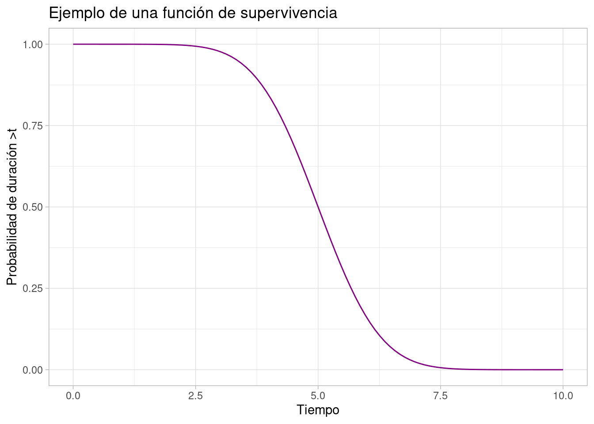
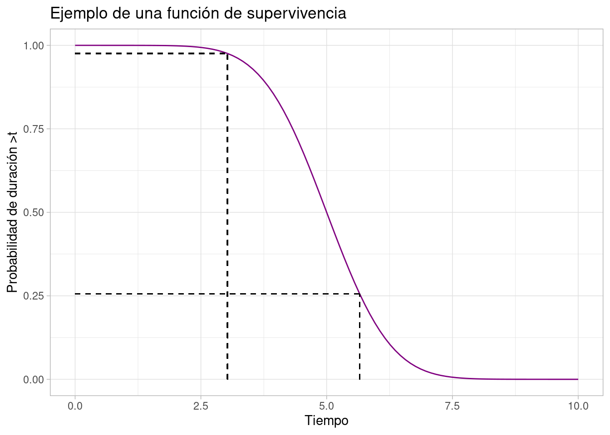
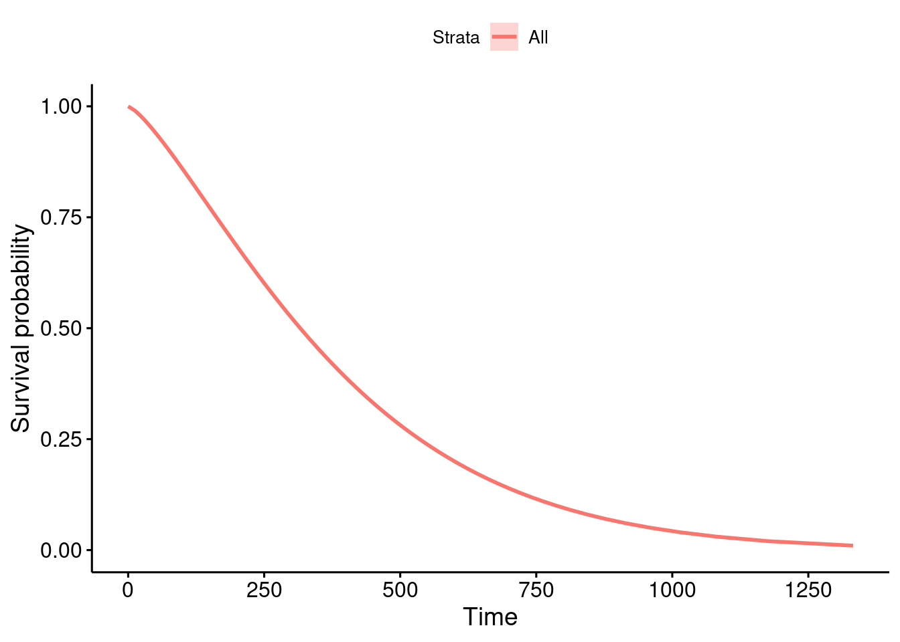

Introducción a análisis de supervivencia con R
datos
Ejemplo de introducción al análisis de supervivencia con R
El nombre del análisis de supervivencia apunta maneras. Inevitablemente, yo lo relaciono con la muerte, porque seguramente se originara para saber cuánto tiempo le quedaba de vida a un paciente con alguna enfermedad.
Pero no sirve solo para eso.
Algunos ejemplos de casos que puedes resolver con análisis de supervivencia son:
- ¿Cuál es la probabilidad de que un paciente con cáncer de mama viva más de 5 años?
- ¿Cuál es el tiempo de espera típico cuando llamas a un taxi?
- De 100 parados, ¿cuántos esperas que encuentren trabajo pasados 2 meses?
Teoría del análisis de supervivencia
Los modelos de supervivencia buscan modelizar la función de supervivencia, dada por esta ecuación:
\[S(t) = 1 - F(t) = P(T > t)\]
Viene a interpretarse como la probabilidad de que la duración del experimento sea mayor de \(t\). \(F(t)\) representa la función de distribución del evento.
Esa gráfica ya daría algo de información. Por ejemplo:

- Sabemos que la probabilidad de la probabilidad de superar el instante \(t = 3\) es de 0,97.
- Sabemos que el tercer cuartil es 5,65.
El objetivo del análisis de supervivencia es estimar esta función de supervivencia.
El método Keplen-Meier para estimar la función de supervivencia
La fórmula que usa este método para estimar la función de supervivencia en \(t\) es:
\[S(t) = \prod_{i: t_i\leq t}\frac{n_i - d_i}{n_i}\]
donde \(t_i\) representa a cada uno de los instantes anteriores al instante \(t\), \(n_i\) es el número de individuos en \(t_i\) y \(d_i\) es el número de defunciones en \(t_i\).
Lo podemos ver mejor con numeritos y este gráfico:

\[ \hat{S}(t) = \prod_{i: t_i\leq t}\frac{n_i - d_i}{n_i} \\ \] \[ \hat{S}(2) = \frac{5-0}{5} = \frac{5}{5} = 1 \\ \] \[ \hat{S}(3) = \frac{4-0}{4} = \frac{4}{4} = 1 \\ \] \[ \hat{S}(4) = \frac{4-2}{4} = \frac{2}{4} = 0,5 \\ \] \[ \hat{S}(5) = \frac{1}{2} \cdot \frac{2-1}{2} = \frac{1}{4} = 0,25 \\ \] \[ \hat{S}(6) = \frac{1}{4} \cdot \frac{1-0}{1} = \frac{1}{4} = 0,25 \]
Aunque después de avanzar un poco con el curso, me entero de que Keplen-Meier se usa principalmente con fines descritivos.
Método Weibull
Un método que sí se usa para estimar la curva es el de Weibull. Sinceramente, ni idea de cómo funciona.
Pero una forma directa de ajustar y visualizarlo es esta (para visualizar simplifica mucho si usas la librería survminer):
library(survival)
wb <- survreg(Surv(time, status) ~ 1, lung)
# Retrieve survival curve from model
surv <- seq(.99, .01, by = -.01)
# Get time for each probability
t <- predict(wb, type = "quantile", p = 1 - surv, newdata = data.frame(1))
# Create data frame with the information needed for ggsurvplot_df
surv_wb <- data.frame(time = t, surv = surv,
upper = NA, lower = NA, std.err = NA)
# Plot
survminer::ggsurvplot_df(fit = surv_wb, surv.geom = ggplot2::geom_line)